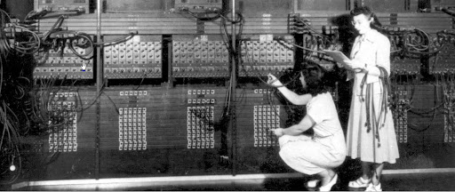
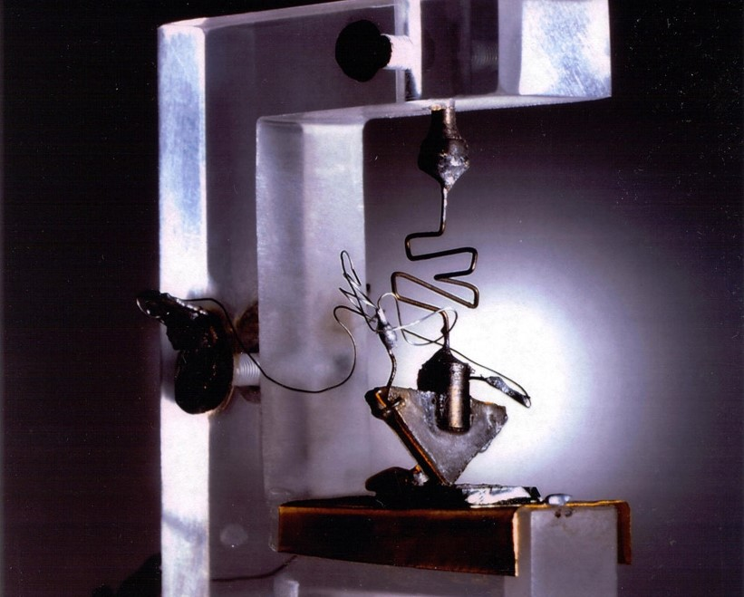
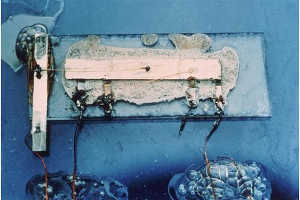
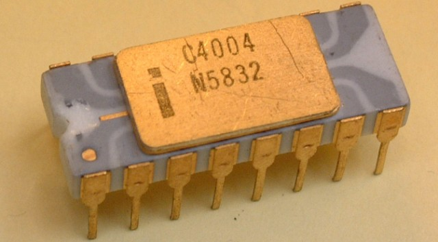

컴퓨터공학이란?

컴퓨터공학은 형식과학의 컴퓨터과학 중 하나의 분야로 분류됩니다. 컴퓨터공학의 사전적 정의는 "정보화 사회에서 컴퓨터의 하드웨어와 소프트웨어 그리고 통신 및 네트워크를 연구하여, 컴퓨터 시스템과 컴퓨터와 관련된 여러 기술을 개발하여 익히고 이를 각 분야에 응용함을 목적으로 하는 학문 분과"입니다.
컴퓨터공학의 발전단계
컴퓨터공학은 크게 4단계의 발전단계로 나눠볼 수 있습니다.
제1세대(1940∼50년대 후반)
제1세대의 컴퓨터들은 진공관을 주요 회로소자로 사용하였고 주로 과학기술 계산 분야에 이용되었으며 컴퓨터의 연산속도는 밀리초(ms) 단위였습니다. 1세대 컴퓨터로는 세계 최초의 컴퓨터 에니악(ENIAC), 최초의 상업용 컴퓨터 유니박(UNIVAC) 등이 있습니다.
제2세대(1950년대 후반∼60년대 중반)
 제2세대 컴퓨터들은 트랜지스터를 주요 회로소자로 사용하였는데 이것은 트랜지스터가 진공관에 비해 작고, 안정적이며, 빠르고, 가격이 저렴하였기 때문입니다. 주기억장치로는 자기코어가 쓰였고 보조기억장치의 사용으로 기억용량이 커졌으며, FORTRAN, COBOL, ALGOL과 같은 고급언어가 개발되어 사용되었고 원거리 데이터를 처리하는 원거리 데이터통신이 도입되었습니다. 그리고 컴퓨터의 연산속도가 마이크로초(㎲) 단위였습니다.
제3세대(1960년대 중반∼70년대 후반)
 제3세대 컴퓨터들은 반도체 기술이 진보하였고, 많은 트랜지스터와 저항으로 구성된 전자회로를 반도체 결정체 위에 압축시킨 집적회로(IC)를 사용하여 컴퓨터의 소형화와 가격 하락을 가져왔으며, 특히 마이크로프로세서를 향한 중요한 걸음을 내딛는 계기를 가져왔습니다. 또한 컴퓨터 내부에서 시스템을 관리·제어하는 운영체제(OS)가 발달하였으며, 온라인 실시간 처리와 다중프로그래밍 방식이 널리 보급되었습니다. 연산속도는 나노초(㎱) 단위로 빨라졌습니다. 대표적인 3세대 컴퓨터로 1964년에 발표된 IBM System/360이 있습니다.
제4세대(1970년대 후반∼현재)
 제4세대 컴퓨터들은 하나의 칩에 수천 또는 수백만 개의 전자회로 소자를 집적시킨 고밀도 집적회로(LSI)와 초고밀도 집적회로(VLSI)를 사용했고 이 기술로 인해 하나의 칩으로 된 중앙처리장치인 마이크로프로세서(microprocessor)가 개발되었습니다. 이 마이크로프로세서의 개발은 개인용 컴퓨터를 대량으로 생산할 수 있는 획기적인 계기가 되었으며 최초의 마이크로프로세서는 1971년에 개발된 인텔(Intel) 4004입니다. 연산속도는 피코초(ps) 단위로 빨라졌으며 최초의 개인용 컴퓨터는 1975년 MITS사 대표인 로버츠(Ed Roberts)가 개발한 알테어(Altair) 8800입니다. 이후 스티브 잡스(Steve Jobs)와 워즈니악(Stephen Wozniak)이 설립한 애플(Apple) 사가 1977년에 애플-Ⅱ를 시장에 내놓는데 IBM 사는 애플Ⅱ에 대항하기 위해 1981년에 IBM PC(Personal Computer)를 발표합니다. 이 세대에는 개인용 컴퓨터가 개발됨으로 인해서 네트워크 또한 발전하였습니다. 이를 통해 세계 전역의 통신망이 컴퓨터와 연결되어 가정에서도 단말기를 통해서 모든 정보를 쉽게 얻을 수 있게 되어 컴퓨터 이용의 대중화시대가 열렸습니다.
EX 제5세대(현재~???)
제5세대 컴퓨터는 회로소자가 더욱 집적화하여 분자나 원자 크기의 지능을 갖는 소자가 개발될 것이며, 컴퓨터의 처리속도도 현재보다 훨씬 빨라질 것입니다. 또한 인간의 지적인 보조자나 인간의 일부를 대신하는 기능을 갖춘 컴퓨터도 나타날 것입니다. 자세한 사항은 아래에서 살펴보겠습니다.